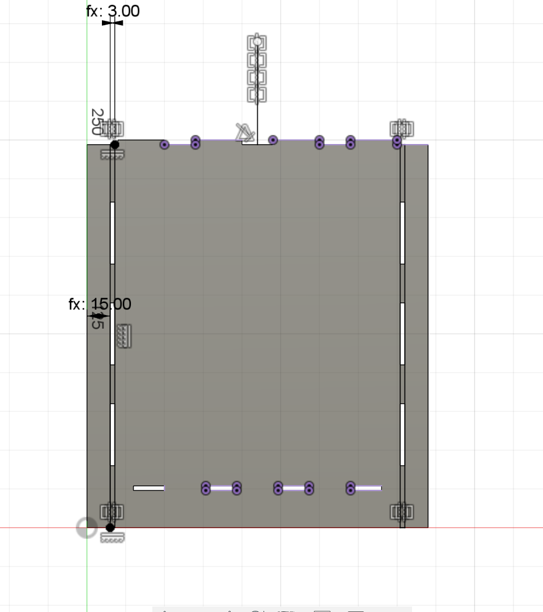

Verkefni 2
Annað verkefnið sem við gerðum í áfanganum var að skera út einhverja mynd í vinylskerara og að skera út einhvern hlut með laserskerara.
Vinylskerari
Myndin sem ég valdi til þess að skera út í vinylskeraranum var merki frá indie tölvuleik sem heitir Hollow Knight. Hér fyrir neðan er upprunalega merkið sem verður síðan skorinn út.
Ég vistaði myndina og hlóð því svo upp í Inkscape til þess að gera myndina tilbúna til skurðar. Þegar myndin er kominn inn í Inkscape þá þurfum við að búa til vector mynd af upprunalegu myndinni svo að vinylskerarinn vita hvar á að skera og hvar ekki. Til þess að gera það þá fer maður í Path > Trace Bitmap.
Síðan dregur maður vektor myndina frá frá hinum og þú eyðir síðan upprunalegu myndinni. Eftir það þarftu að velja 0.020 mm línu þykkt og þá ertu búinn og tilbúinn til þess að skera.
Vektor myndin ætti að líta út eins og myndin hér fyrir neðan.
Eftir að myndin kom út úr vinyl skeraranum á að taka auka efnið sem er í kring og það sem er inn í svo það lýtur út eins og upprunalega myndin.
Síðan á að setja límband á vínylinn til þess að taka það af blaðinu. Erfiðastigið á þessum hluta ferilsins fer eftir hvaða mynd þú valdir í byrjun. Ef þú valdir að skera út einhvern mjög einfaldan form eins og hring eða kassa þá verður þessi hluti ekkert mál. En myndin sem ég valdi er með fullt af þunnum og smáum formum sem gerði þetta erfiðasta hlutan í ferlinu hjá mér. Ég þurfti að vanda mig afar mikið til þess að forðast því að skemma vínylmynina mína sem tók nokkuð langan tíma.
Næst var bara eftir að velja á hvaða yfirborð ég vildi líma myndina mína á. Ég valdi að líma myndina á fartölvuna mína hliðina á Batman límmiðanum mínum.
Svo er bara eftir að rífa límið í burtu og þá er þessi partur af verkefninu lokið.
Tölvustuddur skurður
Í laserskurðinum eigum við að skera út einhvern hlut úr 500mmx500mmx3mm akríl sem við teiknum í Fusion 360. Við eigum að teikna hlutinn með parametrískri hönnun svo við getum skalað hlutinn okkar eftir á eins og við viljum. Ég vildi búa til eitthvað gagnlegt sem ég gæti notað í eitthvað í stað þess að gera eitthvað gagnslaust sem ég mundi gleyma eftir verkefnið. Ég var búinn að hugsa um að kaupa bókahillu fyrir bækurnar mínar en þetta verkefni er fullkomið tækifæri til til þess að hanna mitt eigið. Hér fyrir neðan er smá krass sem ég teiknaði hvernig bókahillan mín mundi lýta út.
Kerf prófun
En áður en við förum að hanna bókahilluna þá þurfum við fyrst að vita "kerfið" á laserskeraranum. Þegar laserinn sker plötuna þá myndast smá bil á milli plötunnar og hlutarins sem var skorinn. T.d. ef maður vildi skera út 10mmx10mm ferning þá mundum við ekki fá nákvæmlega það heldur mundum við fá t.d. 9,9mm x 9,9mm ferning. Mismunurinn á milli stærðsins sem við viljum fá og stærðsins sem við fáum er í rauninni kerfið og það er það sem við þurfum að reikna til þess að fá gerneglda festi punkta. Fyrir neðan er myndræn lýsing á hvað kerf er.
Við reiknuðum kerfið á lasernum með því að teikna átta ferninga hlið við hlið í Fusion 360 og við færum teikninguna yfir á Inkscape til þess að gera hana tilbúna til skurðar.
Við notuðum hvítan akríl til þess að mæla kerfið. Aðferðin sem við notum til þess að finna kerfið á lasernum var þannig að við ýttum alla ferningana á einn hlið og mældum bilið sem myndaðist á hinu hliðinu með skífmál. Síðan deilum við stærðina á bilinu með fjölda lína sem gefur okkur kerf sem er 0,13 mm. Hér fyrir neðan sjáum við hvernig við mældum kerfið.
Hönnun á bókahilluni
Þá getum við byrjað að teikna bókahilluna okkar. Það tók mig þrjár tilraunir að ná að teikna bókahilluna rétt. Í fyrstu tilrauninni þá vildi parametrarnir ekki virka. Ég skildi ekki af hverju parametrarnir vildu ekki virka svo í stað þess að fá hausverk að reyna að finna út hvað vandamálið var þá fannst mér best að byrja upp á nýtt. Í annari tilrauninni þá gerði ég ekki nógu marga parametra sem lætur mig ekki geta skalað bókahilluna eins og ég vildi. Mig fannst allt of flókið og tímaþrekt að bæta við parametra eftir að hafa klárað að teikna svo mig fannst einfaldast að byrja aftur upp á nýtt. Í þriðju tilrauninni gekk allt miklu betur. Ég bætti við fleiri parametrum og vandaði mig extra vel við að búa til parametrana.
Ég byrjaði fyrst á því að teikna bakið á bókahillunni og notaði pattern og mirror til þess að flýta til með að búa til puttana (finger) og götin. Næst extrudaði ég sketchið og fór síðan að teikna hliðarnar.
Ég teiknaði hliðarnar með því að búa til sketch á bakhliðina og extrudaði það síðan fram.
Síðan bjó ég til puttana og götin á hliðunum.
Síðan bjó ég til hilluna sjálfa.
Svo gerði ég þakið á bokahilluni.
Og svo að lokum bjó ég til festingarnar sem fer í gegnum götin á puttunum sem stendur út úr þakinu.
Ég gerði samtals þrjár mismunandi gerðir af geirneglingum sem voru finger joint, og tveir mismunandi gerðir af wedge geirneglingum eins og sést hér fyrir neðan.
Bókahillan lýtur síðan í lokinn eins og hér fyrir neðan.
Næst á að uppsetja bókahilluna okkar í CAM layout með því að nota Align sem finnst undir Modify. Markmiðið er að koma öllu hliðunum á sama fleti eins og sést hér fyrir neðan.
Síðan á að fara í Manufacture til þess að stilla upp laserinn þannig að hann sker plötuna með tilliti til kerfsins. Við hægri smellum á Setup og veljum nýtt Setup svo förum við í Cutting til þess að búa til laserinn. Við setjum gildið á kerfin það sem við fundum í kassann og ýtum á OK.
Næst veljum við alla íhlutina og búum til skurðferilinn sem laserinn mun fara eftir.
Við notum síðan dxf postprocessor til þess að hlaða skjalinu yfir í Inkscape til þess að gera það klárt fyrir skurðinn.
Hér fyrir neðan eru myndir þegar það er verið að skera út bókahilluna.
Eftir að laserinn var búinn að skera þá kom í ljós að geirneglingarnar voru aðeins of þröngar og vildu ekki passa saman. Svo í stað þess að skera hlutinn aftur þá var ég með sá hugmynd að sandpappíra brúnirnar smá svo gerineglingarnar passa fullkomlega saman.

Það hjálpaði mjög mikið að sandpappíra brúnirnar og eftir samsetninguna þá kom bókahillan ansi vel út. Bókahillan mundi vera miklu betri ef að hún væri aðeins stærri og með betra efni en miðað við það sem við höfðum í okkar hendi þá er hún fín. Hér fyrir neðan eru myndir af bókahillunni sjálfa.
Þá er þessu verkefni lokið.